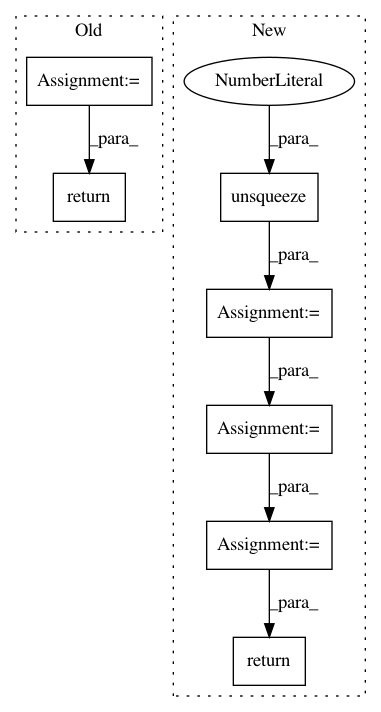

70e4d7fe60a9658bb27b9f5fb67592a1222b2ec3,spotlight/sequence/representations.py,CNNNet,user_representation,#CNNNet#Any#,114
Before Change
.max(-1)[0]
.view(batch_size, dim))
return pooled_representations
def forward(self, user_representations, targets):
target_embedding = self.item_embeddings(targets)
After Change
sequence_embeddings = (self.item_embeddings(item_sequences)
.permute(0, 2, 1))
// Add a trailing dimension of 1
sequence_embeddings = (sequence_embeddings
.unsqueeze(3))
x = sequence_embeddings
for i, cnn_layer in enumerate(self.cnn_layers):
// Pad so that the CNN doesn"t have the future
// of the sequence in its receptive field.
x = F.pad(x, (0, 0, self.kernel_width - min(i, 1), 0))
x = F.relu(cnn_layer(x))
x = x.squeeze(3)
return x[:, :, :-1], x[:, :, -1]
def forward(self, user_representations, targets):
target_embedding = (self.item_embeddings(targets)
In pattern: SUPERPATTERN
Frequency: 5
Non-data size: 7
Instances
Project Name: maciejkula/spotlight
Commit Name: 70e4d7fe60a9658bb27b9f5fb67592a1222b2ec3
Time: 2017-07-06
Author: maciej.kula@gmail.com
File Name: spotlight/sequence/representations.py
Class Name: CNNNet
Method Name: user_representation
Project Name: cornellius-gp/gpytorch
Commit Name: 6ff31af0d8af54c6b3c853cdc37281d635b84637
Time: 2018-05-22
Author: gpleiss@gmail.com
File Name: gpytorch/lazy/added_diag_lazy_variable.py
Class Name: AddedDiagLazyVariable
Method Name: _preconditioner
Project Name: maciejkula/spotlight
Commit Name: 70e4d7fe60a9658bb27b9f5fb67592a1222b2ec3
Time: 2017-07-06
Author: maciej.kula@gmail.com
File Name: spotlight/sequence/representations.py
Class Name: PoolNet
Method Name: user_representation
Project Name: eriklindernoren/PyTorch-YOLOv3
Commit Name: 8af5800b9a74cf7b2c8d2577b7d9be3ef987f26b
Time: 2021-04-09
Author: florian@flova.de
File Name: detect.py
Class Name:
Method Name: detect_image
Project Name: batra-mlp-lab/visdial-challenge-starter-pytorch
Commit Name: 67addeaef37856340f2d220af9a7cad3c4256235
Time: 2019-01-03
Author: karandesai281196@gmail.com
File Name: visdialch/decoders/disc.py
Class Name: DiscriminativeDecoder
Method Name: forward